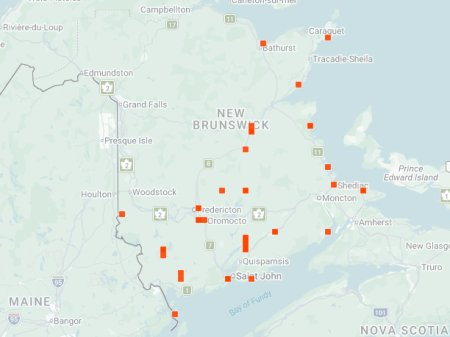

photo: Rebecca McCluskey, July 6, 2025

Distribution map (based on iNaturalist observations)
Identification
- Medium-sized (12–15 mm), dark bronze to green with prominent oblique white lines on elytra.
- Metallic reflections; long legs for fast running on open ground.
- Active over an extended season; often on sandy or gravelly paths.
Habitat in New Brunswick
Prefers open, dry sandy or gravelly areas, roadsides, riverbanks, and disturbed sites. Tolerates a wide range of open habitats with minimal vegetation.
Flight Season in NB
April 15 – November 13 (spring–fall; very extended season in some years).
Distribution & Notes
Widespread in southern and central New Brunswick, often in open disturbed habitats. One of the most commonly encountered species with a long activity period. Populations can be locally abundant on suitable ground.